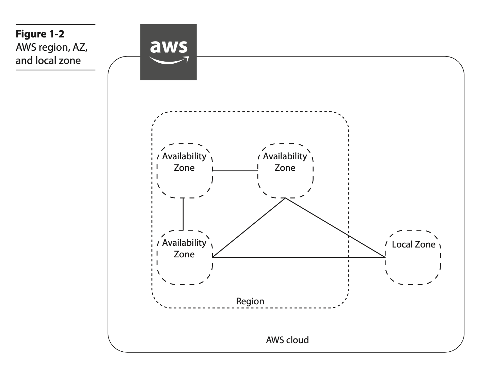

Chapter 1 - Overview of Cloud Computing and Amazon Web Services#
The National Institute of Standards and Technology (NIST) defines cloud computing as:
"Ubiquitous, convenient, on-demand access to shared computing resources that can be rapidly provisioned and released with minimal management effort."
Three basic characteristics of the cloud:
- On demand: Cloud computing enables you to use IT infrastructure as a resource that is always available on demand per your needs.
- Accessible from the Internet: All the resources that you deploy in the cloud are accessible from the Internet.
- Pay-as-you-go model: When you use cloud computing, you pay per your usage.
Many reasons for using the cloud. For example, If you are a startup, you can just focus on the next big idea and forget about purchasing and managing the hardware.
Advantages of Running Cloud Computing on AWS#
| Advantages | Description |
|---|---|
| Gaining agility | You can provision all the resources you need almost instantly. |
| Avoiding guessing about capacity | Since the cloud is elastic, which means you can scale up and scale down based on your requirements at any time, you can provision only the resources that you need at any point of time. |
| Moving from capital expenses to variable/flexible expenses | It becomes difficult to get approval for new hardware each time you want to start a project. With an operational expense model, you have zero up-front costs. |
| Benefiting from massive economics of scale | A user of cloud computing benefits from the massive economies of scale since hundreds of thousands of customers are aggregated in the cloud. This in turns translates to low pay-as-you-go prices. |
| Avoiding spending money on data centers | With cloud computing you don’t have any overhead to manage the data center, and you can focus more on what the business needs. |
| Benefiting from the pace of innovation | Customers can use all the new products and features instantly, whenever they are released. The moment a new feature is available, it is automatically available to you. |
| Going global in minutes | With cloud computing, you don’t have to wait for months or even days to operate from a different region. With just a few mouse clicks and a few minutes, you can be ready to operate from a different region. You can do it almost instantly. |
Three Models of Cloud Computing#
| Cloud Computing Models | Description |
|---|---|
| Infrastructure as a Service (IaaS) | Provides the foundation for a cloud IT environment that includes compute (server), networking, storage, and space in a data center. |
| Platform as a Service (PaaS) | Just want to focus on deploying and managing the applications. PaaS eliminates the job of managing the entire infrastructure layer. |
| Soft-ware as a Service (SaaS) | Way of delivering applications over the Internet. SaaS provider offers a complete product that is hosted and managed by the product vendor, you just need to think about how you are going to use the product. |

Three Cloud Computing Deployment Models#
| Cloud Computing Deployment Models | Description |
|---|---|
| All-in cloud | You design and deploy an application in a public cloud using a cloud service provider. |
| Hybrid | You host some of the applications in the cloud and some of the applications at your own premises. |
| On-premise or private cloud | When you deploy the resources in your own data center using virtualization or resource management tools. |
History of AWS#
- AWS was officially launched in 2006.
- AWS has more than 175 fully featured services.
AWS Global Infrastructure#
- AWS works in 190 countries around the world.
- AWS serves these customers via its global infrastructure, which consists of regions, availability zones (AZs), and points of presence (POPs).
Regions#
- AWS maintains 24 regions spanning five continents in the world, with three additional regions being planned.
- A region is a physical location in the world that comprises clusters of highly redundant data centers. The regions are separated geographically, which provides data sovereignty. You can think of a region as a distinct geographical location where AWS services are made available.
Note: By default, data residing in a region never leaves a region unless explicitly moved by AWS customers.
- AWS also offers the GovCloud region in the United States, which is designed for government agencies to run their workloads in the cloud. Though it is designed for government agencies, other customers can also use this region.
Availability zones (AZs)#
-
Within each region there are availability zones (AZs). An AZ consists of one to six data centers, with redundant power supplies and networking connectivity. As of this writing, there are 76 AZs.
-
A single data center can be part of only one AZ. Each AZ is located in a different floodplain; power grids are designed in such a way that a natural calamity or disaster does not impact multiple AZs.
-
The networking among the AZs in a particular region is designed in such a way that it offers inexpensive, low-latency, private, fiber-optic network connectivity to another AZ in the same region. The latency between the AZs within a region is less than a single digit.
-
The biggest advantage of this is that you can design an application in such a way that it can run on multiple AZs, and since the data can be synchronously replicated within the AZs, in the case of a disaster taking one of the AZs down, there is no impact on your application.
Local zones#
-
Using this local zones, you can run a few specific AWS services closer to user populations where no AWS regions exist.
-
The local zones are connected to the parent region via a high-bandwidth private network, thereby enabling seamless access to rest of the AWS series that is unavailable in these local areas.

Points of presence (POPs) - Edge locations#
-
These edge locations are in most of the major cities across the globe.
-
At the time of this writing, there are 216 POPs.
-
The edge locations are mainly used by content delivery networks to distribute content to nearby end users to reduce latency and provide fast performance.
-
For example, when you watch a video from Amazon Video, the video will be cached in an edge location so that when another customer watches the same video, it will be served from an edge loca- tion for a quick turnaround time and better user experience.
-
In addition to edge locations, AWS has recently added regional edge cache locations between the main servers and the edge locations. When an object is not accessed for a long time, it goes out of the cache, but because the regional edge cache maintains a larger cache, the object can be stored there for a longer amount of time.
-
The POPs consist of both edge locations as well as the regional edge caches.
EXAM TIP: AWS has 24 regions and 76 AZs as of this writing. Since AWS keeps adding regions and AZs, please check the web site to get the latest numbers.